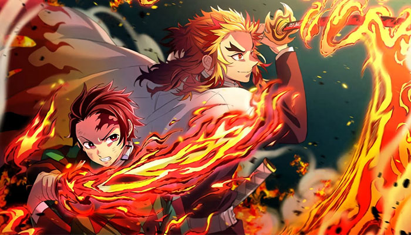

Kamado Tanjiro và những người bạn từ Sát Quỷ Đội đi cùng với Viêm Trụ Rengoku Kyōjurō, để điều tra một loạt những vụ mất tích bí ẩn xảy ra bên trong một chuyến tàu. Họ không biết rằng Enmu, Hạ huyền Nhất thuộc Thập nhị Nguyệt quỷ, cũng ở trên tàu và đã sắp đặt sẵn một cái bẫy.
Sau khi lên chuyến tàu mang tên "Vô Tận" để điều tra về các vụ mất tích, Tanjirō cùng những người bạn của và mình gặp Viêm Trụ Rengoku Kyōjurō. Tanjirō đã gặp Viêm Trụ để hỏi về Điệu Múa Của Hoả Thần (Hoả Thần Thần Lạc) của cha mình, nhưng cậu chỉ nhận được câu trả lời từ Viêm Trụ là: "Anh chẳng biết gì hết! Hãy trở thành người kế tục của anh! Anh sẽ dạy cậu thật tốt!". Tuy nhiên, khi người soát vé bấm vé, Huyết Quỷ Thuật từ con quỷ Enmu đã được kích hoạt và họ bị chìm vào giấc mộng. Để giải thoát cho mình, họ cần phải đốt tấm vé tàu hoặc tự sát. Những người hành khách bị mất tích đã theo lời con quỷ xâm nhập vào giấc mơ của Tanjirō và bạn bè của cậu để phá hủy lõi linh hồn và giúp con quỷ giết họ dễ hơn. Họ làm vậy chỉ để nhận được "những giấc mộng đẹp"
Tanjiro mơ về cuộc sống của gia đình cậu trước khi bị Muzan sát hại, Zenitsu mơ về sự hạnh phúc của mình và Nezuko, Inosuke mơ về đội thám hiểm hang động còn Viêm Trụ thì mơ về cuộc nói chuyện giữa anh và cha mình sau khi trở thành trụ cột.
Tanjirō đã tự thoát khỏi giấc mơ bằng cách tự sát, Zenitsu và Inosuke thì có ý chí mạnh nên bản thể trong mơ của hai cậu có thể ở trong vùng vô thức nên những người kia không thể phá hủy lõi được, Viêm Trụ thì đã ngăn cản cô gái giết mình bằng cách khống chế cô gái ngoài đời thực bằng bản năng. Nezuko đã cứu họ khỏi giấc mơ bằng cách đốt các tấm vé tàu
Sau khi thoát khỏi giấc mơ, Tanjirō lên nóc tàu và tìm thấy Enmu. Cậu đã chém cổ Enmu, nhưng vì hắn đã hợp thể với đoàn tàu nên cậu phải chém cổ hắn ở toa đầu tàu để tiêu diệt hắn.
Tanjirō và Inosuke có nhiệm vụ tiêu diệt Enmu, còn Viêm Trụ, Nezuko và Zenitsu thì bảo vệ hành khách. Khi tới toa đầu tàu, Inosuke đã chém phần sàn để lộ ra cổ của con quỷ. Tên lái tàu vì muốn có giấc mộng đẹp nên đã lấy kim đâm vào bụng Tanjirō. Con quỷ đã làm Tanjirō chìm vào giấc mộng nhiều lần và suýt chết ngoài đời thực nhưng Inosuke đã kịp ngăn cậu lại. Cuối cùng Tanjirō đã tiêu diệt con quỷ bằng cách sử dụng "Thiên Thanh", một điệu trong "Hoả Thần Thần Lạc" và chém đứt cổ Hạ huyền Nhất Enmu.
Cơn ác mộng kết thúc tại đây. Viêm Trụ Rengoku Kyōjurō đã chỉ cậu cách cầm máu bằng hơi thở nhưng cậu không thể di chuyển được. Tuy nhiên, sau một cơn ác mộng thì lại có cơn ác mộng khác còn kinh khủng hơn kéo tới. Đó là sự xuất hiện của Thượng huyền Tam Akaza.
Rengoku Kyōjurō đã bảo vệ Tanjirō và chiến đấu với Thượng huyền Tam. Akaza đã nhiều lần mời gọi Viêm Trụ trở thành quỷ để anh được bất tử, trở nên mạnh hơn và có thể chiến đấu với hắn mãi mãi. Nhưng Kyōjurō đã trả lời: "Già đi và chết đi mới là vẻ đẹp của sinh vật phù du mang tên con người. Bởi vì họ sẽ già đi, bởi vì họ sẽ chết đi, nên họ mới đẹp đẽ và quý giá.".
Rengoku Kyōjurō đã bảo vệ Tanjirō và chiến đấu với Thượng huyền Tam. Akaza đã nhiều lần mời gọi Viêm Trụ trở thành quỷ để anh được bất tử, trở nên mạnh hơn và có thể chiến đấu với hắn mãi mãi. Nhưng Kyōjurō đã trả lời: "Già đi và chết đi mới là vẻ đẹp của sinh vật phù du mang tên con người. Bởi vì họ sẽ già đi, bởi vì họ sẽ chết đi, nên họ mới đẹp đẽ và quý giá.".
Trước khi chết, Viêm Trụ đã nói với Tanjirō vài điều về điệu múa của cha cậu. Câu đặc biệt nhất của anh chính là: "Hãy giữ con tim mình rực lửa!".
Bộ phim kết thúc với phân cảnh chúa công Ubuyashiki nói: "Sớm thôi, ta sẽ gặp lại cậu và mọi người ở đó" và cảnh Tanjirō khóc khi lặp lại tên Viêm Trụ Rengoku Kyōjurō.